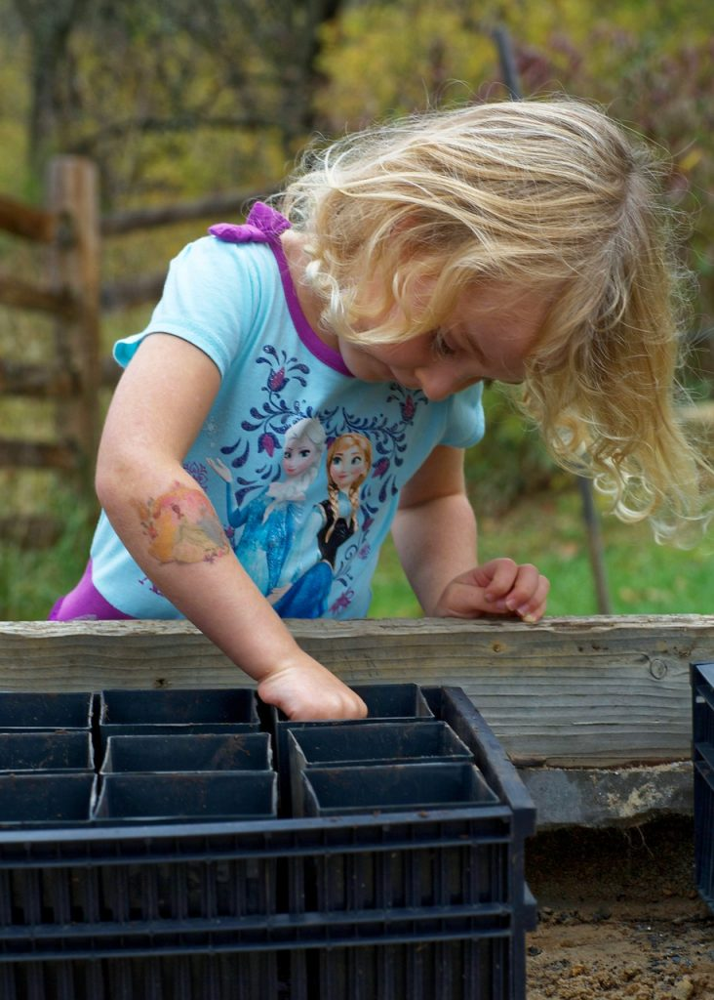

မိမိကိုယ်ကို တန်ဖိုးထားတဲ့ ကလေးတွေဟာဆိုရင်
- မိမိကို မိဘ၊ဆရာမ၊ သူငယ်ချင်းတွေနဲ့ ပါတ်ဝန်းကျင်က တန်ဖိုးထားတယ် လက်ခံတယ်လို့ ခံစားရတယ်
- သူတို့ဟာ သူများတွေက သူတို့အပေါ် မျှော်လင့်သလိုမျိုး လုပ်ဆောင်နိုင်တယ်လို့ ယုံကြည်စိတ်ရှိတယ်
- သူတို့လုပ်ဆောင်လိုက်တဲ့ အောင်မြင်မှု တစ်ခုခုအတွက် ဂုဏ်ယူတယ်
- သူတို့ကိုယ် သူတို့ အကောင်းဖက်ကမြင်တယ်
- နေ့စဉ်ကြုံတွေ့ရမယ့် စိန်ခေါ်မှု (challenge) တွေအတွက် အသင့်ရှိနေတယ်
- ကိုယ့်ကိုယ်ကို ပြန်လည် ဝေဖန်နေလေ့ရှိတယ်
- ကိုယ့်ကိုယ်ကို လုံခြုံမှု ကင်းမဲ့နေမယ်၊ အခြားအကလေးတွေနဲ့ ယှဉ်ပြီး ငါသူတို့လောက် အကောင်းဘူး၊ မတော်ဘူး၊ မတတ်ဘူးလို့ ခံစားရတယ်
- သူတို့မအောင်မြင်တဲ့ လုပ်ဆောင်မှုတွေကိုပဲ အာရုံစိုက်ပြီး သူတို့အောင်မြင်အောင် လုပ်ဆောင်နိုင် တာတွေကိုကျတော့ အလေးမထားဘူး
- ကိုယ့်ကိုယ်ကို ယုံကြည်မှု ကင်းမဲ့နေမယ်
- တစ်ခုခု လုပ်မယ်ဆိုရင် ကောင်းမွန်အောင် လုပ်နိုင်မယ်ပါ့မလား ဆိုပြီး အမြဲ သံသယ ဖြစ်နေမယ်
ဘာ့ကြောင့် ကိုယ့်ကိုယ်ကို တန်ဖိုးထားမှုဟာ အရေးပါရတာလဲ
ကိုယ့်ကိုယ်ကို တန်ဖိုးထားတဲ့ ကလေးတွေဟာ ဘဝမှာ အောင်မြင်မှုတွေ ရတတ်ပါတယ်။ ကျောင်းစာမှာပဲ ဖြစ်ဖြစ်၊ သူငယ်ချင်းတွေနဲ့ ဆက်ဆံရာမှာပဲ ဖြစ်ဖြစ်ပေါ့။ ကိုယ့်ကိုယ်ကို လက်ခံယုံကြည်မှုရှိတဲ့ ကလေးတွေဟာ အခက်အခဲတွေကို ရင်ဆိုင်ကျော်လွှားဖို့ ဝန်မလေးသလို၊ ကိုယ်အရင် မလုပ်ဘူးတဲ့ လုပ်ဆောင်မှု အသစ်တွေကို စမ်းသပ်ကြည့်ဖို့လဲ ဝန်မလေးကြပါဘူး။ အမှားတွေကြုံလာရင်လဲ စိတ်ဓါတ်မကျတတ်သလို၊ ထပ်ပြီးအောင်မြင်အောင် ကြိုးစားဖို့လဲ ဝန်မလေးပါဘူး။ သူတို့ရဲ လုပ်ဆောင်နိုင်စွမ်းတွေနဲ့ အောင်မြင်မှုတွေကို ဂုဏ်ယူကြတဲ့ အတွက် ဒီကလေးတွေဟာ သူတို့ရဲ့ လုပ်ဆောင်ချက်တိုင်းကို အေကောင်းဆုံးဖြစ်အောင် လုပ်ဆောင် နိုင်ကြပါတယ်။ကိုယ့်ကိုယ်ကို တန်ဖိုးမထားတဲ့ ကလေးတွေကတော့ သူတို့ရဲ လုပ်ဆောင်နိုင်စွမ်းနဲ့ ပါတ်သက်ပြီး အမြဲပဲ သံသယ ဝင်နေလေ့ရှိပါတယ်။ သူတို့ကို အခြားသူတွေက လက်ခံမယ်လို့ မထင်ရင် ဝင်ပါဖို့ ရှောင်ရှားကြပါတယ်။ သူတို့ကို သူများက အနိုင်ကျင့်လာရင်လဲ ငုံ့ခံနေလေ့ရှိပြီး ဒီလို မတရား အနိုင်ကျင့်တာတွေကို ပြန်ရင်ဆိုင်ဖို့လဲ ဝန်လေးကြပါတယ်။ သူတို့လုပ်နိုင်မယ်လို့ မယုံကြည် တဲ့အတွက် အခက်အခဲတွေ၊ စိန်ခေါ်မှုတွေတွေ့လာရင်လဲ ရှောင်ပြေးလေ့ရှိကြပြီး အခက်အခဲ ကြုံလာရင် အလွယ်တကူ လက်မြှောက် အရှုံးပေးလေ့ ရှိကြပါတယ်။ အမှားအယွင်းတွေ ကြုံလာရင်လဲ ပြန်နာလန်ထူနိုင်ဖို့ ခဲယဉ်းပါတယ်။
ကိုယ့်ကိုယ်ကို တန်ဖိုးထားမှု အားနည်းတာဟာ အောင်မြင်မှု ရလမ်းတွေကို ပိတ်ပင်နိုင်ပါတယ်။ ဒီကလေးတွေဟာ နေ့တဒူဝ ကြုံတွေ့ရတဲ့ အခက်အခဲတွေအတွက် အမြဲပဲ စိုးရိမ်ပူပန် နေလေ့ရှိကြလို့ ဘဝမှာ အောင်မြင်မှု ရဖို့အတွက် အာရုံစိုက် လုပ်ဆောင်နှိုင်ခြင်း မရှိကြပါဘူး။
ကလေးတစ်ယောက်မှာ ကိုယ့်ကိုယ်ကို တန်ဖိုးထားမှု ဘယ်လိုဖြစ်လာလဲ
အများသူငါ ထင်နေသလိုမျိုး ကလေးတစ်ယောက် ကိုယ့်ကိုယ်ကို တန်ဖိုးထားမှုဟာ သူကို ဘယ်လောက်တော်ကြောင်း၊ ဘယ်လောက် ထူးချွန်ကြောင်း ချီးမွမ်းခံရလို့ ဖြစ်လာတာ မဟုတ်ပါဘူး။ ကလေးကို ဆုတွေအများကြီး ခြီးမြှင့်လို့လဲ ဖြစ်လာတာ မဟုတ်ပါဘူး။ တကယ်တန်းမှာ ကလေးတွေဟာ အောင်မြင်မှု မရပဲ အရှုံနဲ့ ရင်ဆိုင်ရတာတောင်မှ ကိုယ့်ကိုယ်ကို ကျေနပ်ပြီး အကောင်း မြင်နိုင်ပါသေးတယ်။ကလေးတွေ ယှဉ်ပြိုင်မှု တစ်ခုခုမှာ ပါဝင်တဲ့ အခါ သူတို့ဟာ သူတို့ရဲ့ လေ့ကျင့်မှု ကြိုးစားအားထုတ် မှုတွေဟာ သိသာထင်ရှားတဲ့ အကျိုးကြေးဇူးတွေ ရရှိစေတယ်ဆိုတာကို မြင်နိုင်ကြပါတယ်။ ဥပမာ အပြေးလေ့ကျင့်လို့ ပြေးပွဲမှာ ပန်းတိုင်ရောင်အောင် ပြေးနိုင်တယ်၊ စာကျိုးစားလို့ စာမေးပွဲမှာ အမှတ်ကောင်းကောင်းနဲ့ အောင်တယ်။ ဆုရတာ၊ ချီးမွမ်းခံရတာဟာ ဒီလို ကြိုးစားအားထုတ်မှုရဲ့ ရလဒ်ကြောင့် ဖြစ်မှသာ ကလေးရဲ့ ကိုယ့်ကိုယ်ကို တန်ဖိုးထားစိတ်ကို မြှင့်တင်ပေးနိုင်မှာ ဖြစ်ပါတယ်။
ကလေးရဲ့ ကိုယ့်ကိုယ်ကို တန်ဖိုးထားစိတ်ဟာ ကလေးတစ်ယောက်က သူ့လုပ်ဆောင်ချက်ဟာ ထိရောက်မှု ရှိတယ်၊ ပတ်ဝန်းကျင်က လက်ခံတယ်၊ သူဟာလုပ်ဆောင်နိုင်တယ်၊ ဖြစ်အောင်လုပ်နိုင်တယ် ဆိုတဲ့ အတွေ့အကြုံ၊ ခံစားချက်ကနေ ပေါက်ဖွားလာတာပါ။
ကလေးတစ်ယောက် တစ်ခုခုကို အောင်မြင်အောင် လုပ်နိုင်ဖို့ ကိုယ်တိုင်ကြိုးစား သင်ကြားပြီး ကိုယ့်ကြိုးစားအားထုတ်မှုကြောင့် အောင်မြင်အောင် လုပ်နိုင်တယ်၊ ဒီလိုအောင်မြင်မှုရတာကိုလဲ ဂုဏ်ယူတယ်ဆိုရင် သူတို့ဟာ “ငါဖြစ်အောင် လုပ်နိုင်တယ်” ဆိုတဲ့ ခံစားမှု၊ ယုံကြည်မှု ရလာပါတယ်။ ဥပမာ၊ အင်္ကျီကြယ်သီးတပ်တာ၊ ဘောင်းဘီဝတ်တာ၊ ခြေအိပ်စွပ်တာ၊ ဖိနပ်စီးတာကအစ ဘယ်သူ့အကူအညီမှ မယူပဲ ကိုယ့်ဟာကိုယ် ကြိုးစားလို့ အောင်မြင်ရင် သူတို့မှာ “ငါဖြစ်အောင် လုပ်နိုင်တယ်” ဆိုတဲ့ ယုံကြည်ချက် ရလာပါတယ်။
သူတို့ကြိုးစားလုပ်ဆောင်မှု တစ်ခုခုကြောင့် ကောင်းတဲ့ ရလဒ် တစ်ခုခု ရလာရင်လဲ ကလေးတွေဟာ “ငါ့လုပ်ဆောင်မှု ထိရောက်တယ်” ဆိုတဲ့ ခံယူချက်၊ ယုံကြည်ချက် ရလာပါတယ်။ အလုပ်တစ်ခုကို အဆုံးတိုင် အောင်မြင်ပြီးမြောက်မှ ဒီခံစားချက် ရလာတာ မဟုတ်ပါဘူး။ ကြိုးစားအားထုတ်မှုကြောင့် တိုးတက်လာတာ မြင်ရတယ်၊ အောင်မြင်မှု ပန်းတိုင်နဲ့ နီးလာတာကို မြင်ရတယ် ဆိုရင်လဲ ဒီစိတ်ခံယူချက်မျိုး ရလာပါတယ်။ ဥပမာ၊ သစ်စေ့လေးတွေ ကြဲပြီး စိုက်ထားတာ အညှောက်လေးတွေ ပေါက်လာတာ မြင်ရတာမျိုး၊ ကိုယ်နေ့တိုင်း ရလောင်းပေးတဲ့ အပင်က အပွင့်လေးတွေ ပွင့်လာတာမျိုးပေါ့။
ကလေးတွေဟာ သူတို့ရဲ့ လုပ်ဆောင်ချက်ကို သူတို့မိဘ၊ ဆရာသမား၊ သူငယ်ချင်းတွေက လက်ခံတယ်လို့ ခံစားရရင် သူတို့ကိုယ် သူတို့လဲ လက်ခံဖို့ ပိုလွယ်ကူပါတယ်။ သူတို့ရဲ့ ကောင်းမွန်တဲ့ လုပ်ဆောင်ချက် အပြုအမူတွေကြောင့် သူတို့ မိဘတွေရဲ့ ချီးမွမ်းတာ ခံရရင် သူတို့ရဲ့ ကိုယ့်ကိုယ်ကို လက်ခံမှုဟာ အစများစွာ မြင့်တက်သွားပါတယ်။ သူတို့ရဲ့ လုပ်ဆောင်မှုနဲ့ ပါတ်သက်လို့ လိုအပ်သလို အကူအညီ ပေးတာ၊ အားပေးတာ၊ အကြံပြုတာတွေဟာလဲ ဒီ “ပတ်ဝန်းကျင်က လက်ခံတယ်” ဆိုတဲ့ ခံစားမှုကို မြင့်တက်စေပါတယ်။
ဒီအပေါ်က ပြောခဲ့တဲ့ ခံစားချက် သုံးချက်ဟာ ကလေးတစ်ယောက် ကိုယ့်ကိုယ်ကို ဘယ်လောက် တန်ဖိုးထားတဲ့ စိတ်ဓါတ်ဖြစ်စေလဲ ဆိုတာ ဆုံးဖြတ်တဲ့ နေရာမှာ အလွန်အရေးပါတယ်လို့ ကလေးစိတ်ပညာရှင်တွေက ထောက်ပြပါတယ်။ ဒါဆို ဒီလိုစိတ်ဓါတ် ခံစားချက်တွေ ဖြစ်ပေါ်လာအောင် ဘယ်လိုလုပ်ကြမလဲ။
ကလေးတွေမှာ ကိုယ့်ကိုယ်ကို တန်ဖိုးထားတဲ့ စိတ်ဓါတ် ဖွံ့ဖြိုးလာအောင် မိဘတွေက ဘယ်လို ပြုစုပျိုးထောင် ပေးနိုင်မလဲ
ကိုယ့်ကိုယ်ကို တန်ဖိုးထားတဲ့ စိတ်ဓါတ်ဟာ နေ့ချင်းညချင်း ဖြစ်လာတာ မဟုတ်ပါဘူး။ အကယ်လို့ ကိုယ့်ကလေးမှာ ကိုယ့်ကိုယ်ကို တန်ဖိုးထားတဲ့ စိတ်လျှော့နည်းနေတယ် ဆိုရင်လဲ ကိုယ့်ကိုယ်ကို တန်ဖိုးထားတဲ့ စိတ်ဓါတ် မြင့်တက်လာအောင် မိဘတွေက ပြုစုပျိုးထောင် ပေးနိုင်ပါတယ်။မိမိကလေး အရင်က မလုပ်နိုင်ခဲ့တဲ့ မလုပ်ဖူးတဲ့ အရာတွေကို လုပ်နိုင်အောင် သင်ယူနိုင်ဖို့ အားပေးကူညီပါ။ ဘယ်အသက်အရွယ်မဆို ကလေးတွေအတွက် အသစ်အသစ် သင်ယူစရာတွေ အမြဲရှိနေပါတယ်။ ကလေးငယ်ငယ်တုန်းမှာတောင် ခွက်ကလေး စကိုင်နိုင်တာမျိုး၊ စပြီး လမ်းစလျောက်နိုင် တာမျိုးတွေဟာ ကလေးတွေကို မိမိရဲ့ စွမ်းဆောင်နိုင်စွမ်းကို အားရကျေနပ်တဲ့ စိတ်ခံစားမှုတွေ ရရှိစေနိုင်ပါတယ်။ ကလေး တဖြည်းဖြည်း အသက်ကြီးလာ တာနဲ့အမျှ အင်္ကျီ ဝတ်တတ်လာတာ၊ စာစဖတ်တတ်လာတာ၊ စက်ဘီးစီးတတ်လာတာ အစရှိတာတွေဟာ တဖြည်းဖြည်းနဲ့ ကလေးရဲ့ ကိုယ့်ကိုယ်ကို ယုံကြည်မှုနဲ့ တန်ဖိုးထားမှုကို မြင့်တက်လာ စေပါတယ်။
ကလေးတွေကို အသစ်လုပ်နိုင်အောင် သင်ကြားတဲ့ အခါမှာ ပထမ သူတို့ကို ဘယ်လို လုပ်ရမယ်ဆိုတာ နည်းလမ်းပြပေးပါ။ ပြီးတော့မှ သူတို့ဖာသာ သူတို့လုပ်ပါစေ။ မှားရင်လဲ စိတ်ရှည်ရှည်နဲ့ အမှားပြင်ပေးပါ။ သူတို့ ဒီလိုအသစ် သင်ကြားဖို့၊ လေ့ကျင့်ဖို့ အခွင့်အရေးတွေ များများ ဖန်တီးပေးပါ။ အသစ်သင်တဲ့ နေရာမှာလဲ ကလေးနဲ့ သင့်လျော်တဲ့ သင်ကြားမှုမျိုး ဖြစ်ပါစေ။ အရမ်းလွယ်လွန်းရင်လဲ ကလေးက သူတို့ရဲ့ လုပ်ဆောင်နိုင်မှုကို တန်ဖိုးမထားတော့ပဲ အရမ်းခက်လွန်းရင်လဲ ကလေးက မလုပ်နိုင်တော့ စိတ်ဓါတ်ကျသွား နိုင်ပါတယ်။

- အလွန်အကြူး ချီးမွမ်းခြင်းကို ရှောင်ကျဉ်ပါ။ သူတို့ကြိုးစားအားထုတ်မှု မရှိပဲ ရလာတဲ့ ချီးမွမ်းမှုဟာ ကလေးတွေအတွက် တန်ဖိုးမရှိပါဘူး။ ဒါကို ကလေးတွေဟာ ခံစားသိရှိ ကြပါတယ်။ ဥပမာ ကိုယ့်ကလေးက ကစားပွဲမှာ ဘောလုံးကန်တာ အဆင်မပြေပေမယ့် ့် မိဘလုပ်သူက “သားလေး ဘောလုံးကန်တာ အရမ်းကောင်းတာပဲ” ဆိုပြီး ချီးမွမ်းတာမျိုးဟာ ကလေးလုပ်သူအတွက် တန်ဖိုးထားရတဲ့ ခံစားမှုမျိုး မရပါဘူး။ အပေါ်ယံပဲ ဆိုတဲ့ ခံစားမှုမျိုး ကလေးတွေ ခံစားရပါတယ်။ ဒီလိုမျိုး မကြာခဏ အနှစ်မပါတဲ့ ချီးမွမ်းမှုမျိုးဟာ များလာရင် ကလေးရဲ့ ကိုယ့်ရဲ့စွမ်းဆောင်ရည် အပေါ် ယုံကြည်မှုကို ထိခိုက်ပျက်စီး စေနိုင်ပါတယ်။ ဒီ့အစား “ဒီနေ့တော့ သားသား ကြိုးစားပမ်းစား ကန်ပေမယ့် ကံမလိုက်တော့လဲ မနိုင်ဘူးပေါ့သားသားရယ်၊ နောက်နေ့တွေ ထပ်ကြိုးစားကန်ပေါ့” ဆိုတာမျိုးက ကလေးရဲ့ ကြိုးစားအားထုတ်မှုကို အသိအမှတ်ပြုရာ ရောက်သလို နောက်တကြိမ် ထပ်ကြိုးစားချင်စိတ်ကိုလဲ အားပေးရာ ရောက်ပါတယ်။
- ကြိုးစားအားထုတ်မှုကို ဦးစားပေး ချီးမွမ်းပါ။ အောင်မြင်မှုကို ချီးမွမ်းတာမျိုး (ဥပမာ၊ ပထမရလို့ ချီးမွမ်းတာမျိုး) ဒါမှမဟုတ် ရှိနေပြီးသား အရည်အချင်းတစ်ခုခုကို ချီးမွမ်းတာမျိုး (ဥပမာ၊ ဉာဏ်ကောင်းတာကို ချီးမွမ်းတာ) တွေကို ရှောင်ကျဉ်ပါ။ ဒီလိုချီးမွမ်းမှုမျိုး မကြာခန ခံရတဲ့ ကလေးဟာ သူတို့ ရရှိနေတဲ့ ချီးမွမ်းခံရမှု မရတော့မှာ၊ ပျောက်ဆုံးသွားမှာ ကြောက်တဲ့အခါကျတော့ သူတို့ အောင်မြင်မှု မရနိုင်မဲ့၊ ရဖို့မသေခြာတဲ့ ကိစ္စတွေဆို လုပ်ဆောင်ဖို့ ဝန်လေးကြပါတယ်။ ဒီကလေးတွေဟာ အခက်အခဲနဲ့ စိန်ခေါ်မှုတွေကို ရင်ဆိုင်ဖို့ထက် အခက်အခဲ၊ စိတ်ခေါ်မှုတွေ ကြုံလာရင် ရှောင်ရှားဖို့၊ ထွက်ပြေးဖို့ ကြိုးစားတတ်ကြပါတယ်။ ဒီ့အစား ကြိုးစားအားထုတ်မှုကို ချီးမွမ်းပါ။ ဒါမှမဟုတ် ဒီကြိုးစားမှုကြောင့် ရလာတဲ့ တိုးတက်မှုကို ချီးမွမ်းပါ။ ကြိုးစားလိုတဲ့စိတ်၊ အခက်အခဲကို ရင်ဆိုင်လိုတဲ့စိတ်၊ ယှဉ်ပြိုင်လိုတဲ့ စိတ်ဓါတ်ကို ချီးမွမ်းပါ။ ဒီလိုချီးမွမ်းမှုမျိုးဟာ ကလေးတွေရဲ့ ကြိုးစားအားထုတ်လိုမှု၊ အခက်အခဲကို ရင်ဆိုင် ကျော်လွှားလိုမှုတွေကို အားပေးပါတယ်။ ဒီလိုစိတ်ဓါတ်မျိုး ရှိတဲ့ကလေးတွေဟာ ဘဝမှာ အောင်မြင်မှု ပိုရရှိကြပါတယ်။
ကလေးတွေကို ကြမ်းတမ်းတဲ့ ပြောဆိုမှု၊ ပြင်းပြင်းထန်ထန် အပြစ်တင် ဝေဖန်မှုတွေကို ရှောင်ကျဉ်ပါ။ ကလေးတွေကို သူများတွေက ဝေဖန်ပြောကြား မှုတွေဟာ ကလေးတွေ သူတို့ကိုယ် သူတို့ မြင်တဲ့ အမြင်တွေအဖြစ် ပြောင်းလဲသွားတတ်ပါတယ်။ ဥပမာ၊ “အပျင်းထူလိုက်တာ” လို့ မကြာခန အပြောခံရတဲ့ ကလေးတွေဟာ သူတို့ကိုယ် သူတို့ အပျင်းထူတယ်လို့ မြင်တတ်ကြပြီး၊ အသုံးမကျဘူးလို့ အပြောခံရတဲ့ ကလေးတွေဟာ “ငါအသုံးမကျဘူး” ဆိုတဲ့ အမြင် ဝင်သွားတတ်ပါတယ်။ ဒီကလေးတွေဟာ သူတို့ကိုယ် သူတို့ အကောင်းမမြင်တော့ပါဘူး။ သူများပြောတဲ့ အတိုင်း သူတို့ကိုယ် သူတို့ မြင်လာကြပါတယ်။ ဒါ့ကြောင့် ကလေးတွေကို ဒီလို မကောင်းမြင်တဲ့ ဝေဖန် ပြောကြားခြင်းတွေကို ရှောင်ကျဉ်ပါ၊
ကလေးရဲ့ အားသာချက်တွေအပေါ်မှာ အဓိက အလေးထားပါ။ ကလေးရဲ့ အားသာချက်တွေကို ပိုပြီးဖွံဖြိုးလာအောင် လုပ်နိုင်ဖို့ ကူညီပါ၊ အခွင့်အရေးတွေ ဖန်တီးပေးပါ၊ ကလေးရဲ့ အားနဲချက်ကို ပြုပြင်ဖို့ အချိန်ကုန် အပင်ပန်းခံပြီး ကြိုးစားနေတာထက် ကလေးတော်တဲ့ နေရာမှာ ပိုတော်လာအောင် လုပ်နိုင်ဖို့ အခွင့်အရေး ဖန်တီးပေးတာဟာ ကလေးကို မိမိကိုယ်ကို တန်ဖိုးထားလိုစိတ် ပေါ်လာအောင် အားပေးပါတယ်။ ဥပမာ စာတော်တဲ့ ကလေးကို စန္ဒယားလဲ အတီးတော်ရမယ် ဆိုပြီး အတင်းတွန်းအားပေးတာမျိုး၊ စာမတော်ပဲ ပန်းချီဆွဲတော်တဲ့ ကလေးကို ပန်းချီဆွဲတာ အားမပေးပဲ စာတော်ရမယ် ဆိုပြီး အတင်းတွန်းတာမျိုးဟာ ကလေးကို မိမိကိုယ်ကို တန်ဖိုးထားလိုစိတ် လျော့နည်းလာအောင် တွန်းအားပေးသလို ဖြစ်စေပါတယ်။ မိမိကလေး ဘယ်နေရာမှာ ထူးချွန်လဲ၊ တော်လဲဆိုတာ ဂရုစိုက်ကြည့်ပြီး ဒီထူးချွန်တာကို ပိုထူးချွန်အောင် လုပ်နိုင်ဖို့ ကူညီပေးပါ။
ကလေးတစ်ယောက် မိမိကိုယ်ကို တန်ဖိုးထားမှုဆိုတာ နေ့ချင်းညချင်း ဖြစ်လာတာ မဟုတ်ပါဘူး။ တဖြည်းဖြည်းချင်း တည်ဆောက်ယူရတာပါ။ မိဘတွေရဲ့ စိတ်ရှည်မှု၊ ပံ့ပိုးအားပေး ကူညီမှု၊ ကြိုးစား အားထုတ်မှု အများကြီး လိုပါတယ်။ အထက်က တင်ပြခဲ့တာတွေကို ဂရုတစိုက် မှတ်သားပြီး မိမိကလေးကို ဘဝမှာ အောင်မြင်တဲ့ ကလေးများဖြစ်အောင် ပြုစုပျိုးထောင် နိုင်ကြပါစေ။
Photo credits: Khamkhor | Pixabay
Reference; Kids Health | Developing your child’s self-esteem